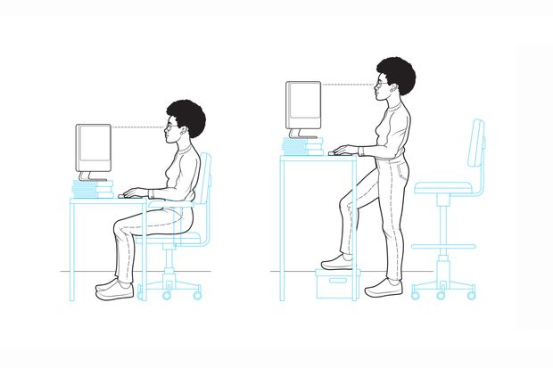
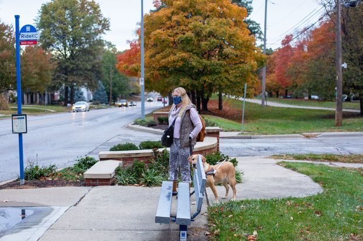
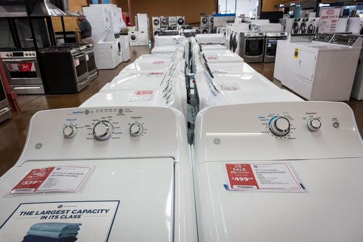

| 2020-11-30 12:01:00 |
World |
Measures of Chinese Economic Activity Signal Widening Recovery |
Manufacturing and nonmanufacturing reach highest levels in three and eight years, respectively |
|
| 2020-11-29 22:38:00 |
Deals |
S&P Global Nears Deal to Buy IHS Markit for About $44 Billion |
Landmark deal would combine two of the largest providers of data to Wall Street |
|
| 2020-11-29 21:59:00 |
Politics |
Joe Biden Fills Out His Economic Team |
President-elect’s picks include Neera Tanden to head the Office of Management and Budget and Cecilia Rouse to chair the Council of Economic Advisers |
|
| 2020-11-29 20:28:00 |
Politics |
Biden Injures Ankle Over Thanksgiving Weekend |
Hairline fractures will require the president-elect to wear a walking boot for several weeks |
|
| 2020-11-29 20:00:00 |
Life & Arts |
Your Home-Office Ergonomics Are Still a Mess—Do Something About It |
With the pandemic not slowing down and many workplaces shut down for winter, your long-term health may depend on getting your desk set up well |
 |
| 2020-11-29 19:08:00 |
Markets |
Investors Pile Into Risky ETFs During Wild Market Rally |
A hunt for bigger returns has led investors to plow money into funds offering a chance to double or triple daily returns but at sizable risk |
 |
| 2020-11-29 18:48:00 |
Business |
Airbnb, DoorDash Aim for Higher-Than-Expected Valuations Ahead of Debuts |
Airbnb plans to target a range of around $30 billion to $33 billion, while DoorDash will seek a valuation of around $25 billion to $28 billion |
|
| 2020-11-29 18:37:00 |
Business |
Thanksgiving Draws Travel to a Pandemic Peak |
Airport screenings were elevated this weekend, and some chose to drive rather than fly |
 |
| 2020-11-29 17:37:00 |
World |
Iran’s Nuclear Efforts Pose Growing Threat to Its Foes Despite Setbacks |
Friday’s killing sets back country’s nuclear program, but U.S. and its allies still face major challenges in trying to constrain Tehran’s nuclear ambitions |
|
| 2020-11-29 17:25:00 |
World |
Former Zappos Chief Tony Hsieh Exalted Customer Service, Set High Bar for Rivals |
Entrepreneur nurtured online shoe seller, was bestselling author and management guru |
 |
| 2020-11-29 17:16:00 |
Politics |
Trump Calls Justice, FBI ‘Missing in Action’ on Election Allegations |
Federal officials and state election authorities agree they have seen no evidence of tampering with voting systems |
|
| 2020-11-29 17:10:00 |
Opinion |
Canceling Student Debt Would Be a ‘Brahmin Bailout’ |
The Democratic Party looks to build policy around the interests of its educated elite voters. |
|
| 2020-11-29 17:08:00 |
Opinion |
Deploying Big Data to Determine How Well Vaccines Work |
As the initial rollout starts, it’s time to start planning a registry to monitor health outcomes. |
|
| 2020-11-29 17:06:00 |
Opinion |
Notable & Quotable: Trump |
‘The problem for Trump’s reelection was not that his response was too anti-lockdown and loosey-goosey. On the contrary.’ |
 |
| 2020-11-29 16:18:00 |
Opinion |
Venezuela’s Guide to Election Theft |
Americans have a legal path when a vote is disputed. Chávez denied all recourse. |
|
| 2020-11-29 16:16:00 |
Opinion |
How to Stop the Paris Climate Accord |
Trump should submit it for the Senate to ratify, or rather reject. |
|
| 2020-11-29 15:54:00 |
Business |
Black Friday Was a Bust for Many Stores, Better for Online |
Foot traffic plunges by half amid coronavirus pandemic while online sales jump; consumers turn to Amazon and big-box chains that offer one-stop shopping |
|
| 2020-11-29 15:14:00 |
World |
Ethiopia’s Tigray Group, Once Powerful, Now Battles Government Forces in Bid for Survival |
Deepening conflict has led to hundreds of civilian deaths and displaced tens of thousands as some analysts fear the country could slide into civil war |
|
| 2020-11-29 15:04:00 |
World |
White House Aide Kushner to Hold Talks in Saudi Arabia, Qatar |
Focus of talks expected to be on mending rift between Qatar and other Arab states, officials say |
 |
| 2020-11-29 15:00:00 |
Life & Arts |
How Transit Agencies Are Trying to Make Your Commute Safe |
Masks, social distancing and public-private partnerships can help mass transportation systems weather the impact of the Covid pandemic |
|
| 2020-11-29 15:00:00 |
Economy |
Economy Week Ahead: November Jobs Report, Trade, Manufacturing |
Data out this week is likely to show the U.S. labor market continuing to heal slowly |
|
| 2020-11-29 14:59:00 |
World |
French Police Officers Face Assault Charges in Beating of Black Music Producer |
Prosecutors want three of the accused to stay in jail as probe determines if trial should take place |
|
| 2020-11-29 14:56:00 |
Books |
‘Inferno’ Review: From Hell-Raiser to Hero |
For once in his error-prone life, an airman does everything right—as his bomber is consumed by fire and a crashing landing seems inevitable. |
|
| 2020-11-29 14:42:00 |
Opinion |
Can Republicans Regroup on Health Care? |
The party needs to address its biggest policy vulnerability. |
|
| 2020-11-29 14:41:00 |
Opinion |
Team Obama’s Iran Illusions |
Its gurus have learned nothing in their years out of power. |
|
| 2020-11-29 14:40:00 |
Opinion |
The Election Lost in Pennsylvania Court |
She was up by four votes, until the state Supreme Court ruled. |
|
| 2020-11-29 12:53:00 |
Opinion |
Another Bold Strike Against Iran |
The killing of Mohsen Fakhrizadeh demonstrates Israel’s capabilities and constrains Biden’s options. |
|
| 2020-11-29 12:52:00 |
Opinion |
Beware the Dow 30K Euphoria |
The market always dives en route to long-term rises. And tech stocks look wobbly. |
|
| 2020-11-29 12:22:00 |
World |
India’s Farmer Protests Challenge Modi’s Market Deregulations |
Prime minister’s push to overhaul agricultural markets in an effort to boost growth meets resistance |
|
| 2020-11-29 12:00:00 |
U.S. |
State, Local Governments Slashed Spending After Covid. Next Year Could Be Worse. |
After drawing on reserves and federal aid, Kansas City leaders cut staff, turn off the city’s fountains and brace for 2021 |
 |
| 2020-11-29 10:58:00 |
Opinion |
School’s Out, But It’s Not About the Children |
The decision to close schools in New York is far from a “data-driven, science-driven” decision. |
|
| 2020-11-29 10:57:00 |
Opinion |
Bad Polling and the Accuracy of Predictions |
Guesses by political pollsters, the CBO, the World Health Organization or the Intergovernmental Panel on Climate Change deserve the same assumption of scientific accuracy that a forecast for weather a week from now deserves. |
 |
| 2020-11-29 10:55:00 |
Opinion |
Actors’ Equity Errs; More Eyeballs Build Demand |
Equity Association is ignoring a fundamental marketing insight that was demonstrated in Chicago by the contrasting views of William Wirtz (Chicago Blackhawks) and P.K. Wrigley (Chicago Cubs). |
|
| 2020-11-29 10:00:00 |
Markets |
Platinum Draws Investors as Gold Rally Stalls |
Disruptions caused by the pandemic are expected to lead to the largest shortage of platinum on record |
|
| 2020-11-29 09:18:00 |
Life & Arts |
The NFL’s Thanksgiving Weekend Has Become a Covid Crisis |
The league will shut down for two days to regroup from a weekend in which top teams were sidelined, a local government rendered the San Francisco 49ers homeless and the Denver Broncos played without a quarterback |
 |
| 2020-11-29 09:00:00 |
U.S. |
Restaurant Holdouts Defy Covid-19 Shutdown Orders |
Rising coronavirus cases pose new threat to battered restaurant businesses |
|
| 2020-11-29 08:00:00 |
U.S. |
Biden Plans to Roll Back Trump-Era Education Policies |
President-elect wants to expand resources for public schools and reinstate several civil-rights guidelines that were rescinded |
|
| 2020-11-29 08:00:00 |
Shipping Matters |
Britain Braces for Logistics Havoc as Brexit’s Final Act Looms |
Customs checks, tariffs and more paperwork are coming after Jan. 1, and shipping specialists expect rattled supply chains |
 |
| 2020-11-29 07:34:00 |
World |
Australia Threatens WTO Action Against China as Trade Row Intensifies |
Australian barley exports to China have mostly stopped after Beijing imposed tariffs in May |
 |
| 2020-11-29 07:00:00 |
Life & Arts |
Do You Have E-Charisma on Zoom? Here’s How to Get It |
The flair and charm that works for in-person meetings doesn’t come across the same way on a video chat; ‘E-charisma involves a completely different set of skills’ |
 |
| 2020-11-29 07:00:00 |
Business |
Pharmacies Add Freezers, Train Staff to Handle Covid-19 Vaccination Drive |
Retailers are preparing to administer coronavirus shots, but many guidelines remain uncertain |
|
| 2020-11-29 05:30:00 |
Economy |
Disparity in Jobless Rates Suggests Black Workers Face Slower Recovery |
For Black Americans to have the same job prospects as whites, they often need to hold more-advanced credentials |
|
| 2020-11-29 05:30:00 |
Markets |
Tesla’s S&P 500 Debut Is Set to Put $100 Billion in Trades in Motion |
Asset managers and trading desks will be scrambling next month to account for the market juggernaut |
|
| 2020-11-28 21:14:00 |
Politics |
Pennsylvania High Court Rejects Lawsuit Challenging Election |
Justices throw out a lower court’s order preventing state from certifying dozens of contests |
 |
| 2020-11-28 20:00:00 |
World |
Iran Vows to Avenge Slain Nuclear Scientist, Says It Won’t Be Lured Into Conflict |
Tehran accuses Israel of trying to sow chaos as it weighs possible diplomatic re-engagement with the Biden administration |
 |
| 2020-11-28 19:51:00 |
World |
Former Zappos CEO Tony Hsieh Dies at 46 From Injuries Connected to House Fire |
The Harvard-educated son of immigrants was a pioneer of e-commerce and well known for his quirky management theories and customer obsession |
 |
| 2020-11-28 18:28:00 |
Life & Arts |
Vanderbilt’s Sarah Fuller Achieves College Football Milestone With Kickoff |
Soccer goalkeeper becomes first woman to play a down of football in one of the five major conferences |
|
| 2020-11-28 13:43:00 |
World |
In France, Thousands Protest Macron’s Effort to Restrict Images of Police |
Demonstrations are a test of civil liberties in an era of coronavirus-linked curbs |
|
| 2020-11-28 13:00:00 |
WSJ. Magazine |
The Perfect Garden Home You’ve Been Dreaming of All Year |
Landscape and garden designer Luciano Giubbilei finds a new creative retreat in the former home of a Mallorcan country potter. |
 |
| 2020-11-28 12:23:00 |
World |
Ethiopian Forces Launch Offensive on Tigray Capital |
Shelling begins in Mekelle, moving the three-week conflict into a new phase that could destabilize the wider region |
|
| 2020-11-28 12:07:00 |
U.S. |
Texas Attorney General’s Legal Woes Potentially Hinder Google Case |
Republican Ken Paxton has been accused by some former staffers of illegally using office to benefit donor |
|
| 2020-11-28 12:01:00 |
Life & Arts |
After Covid-19, Broadway’s Next Comeback |
It won’t be easy, but New York theater will recover from the current shutdown—just as it weathered the Depression, the AIDS crisis and 9/11. |
 |
| 2020-11-28 11:00:00 |
Business |
Solar Power Booms in Texas |
The state, a leader in wind energy, will be home to the nation’s largest solar farm, part of an expected surge in development |
|
| 2020-11-28 10:02:00 |
Markets |
The Economy Is Still Vulnerable. Trade Could Be a Refuge. |
Exporters are recovering strongly even as domestically focused services industries suffer amid Covid-19’s resurgence |
 |
| 2020-11-28 09:03:00 |
Markets |
Stocks Say Covid Recovery Is Nigh. Bonds Tell a Different Story. |
All-important Treasury market is a holdout in reflecting increased economic optimism from Covid-19 vaccine news |
 |
| 2020-11-28 08:00:00 |
Tech |
Tesla’s Delayed Semi Truck Tests Elon Musk’s Ability to Scale Up |
Silicon Valley car maker set bar higher after the pandemic hardly dented growth plans |
|
| 2020-11-28 07:00:00 |
Opinion |
Dave Brubeck, Beyond ‘Take Five’ |
Born 100 years ago, the pianist and composer found immense success melding musical classicism with polyrhythmic experiment. |
 |
| 2020-11-28 07:00:00 |
Film Review |
Federico Fellini: Iconically Italian |
A new collection of the auteur’s films from Criterion celebrates the humor, compassion and style that make his work unforgettable. |
 |
| 2020-11-28 06:00:00 |
Life & Arts |
This Doctor Elevated His Yoga Practice—20 Feet Off the Ground |
A chance encounter with aerial silks helped Dr. Robert Sullivan build his core strength and overcome his fear of heights |
|
| 2020-11-28 05:33:00 |
World |
Biden’s NATO Amity Sparks Debate Among European Allies |
President-elect’s reassurance of the U.S.’s commitment to NATO has prompted disagreements among Europe’s leaders |
|
| 2020-11-28 05:30:00 |
Markets |
Pausing Loan Payments During Coronavirus Is Producing Uneven Results |
Federal relief programs for mortgages and student loans were relatively easy to get and flexible. Programs for credit cards, auto and personal loans were more happenstance. |
|
| 2020-11-28 05:30:00 |
Politics |
States Explored Litigation to Challenge U.S. Policy on Climate Change |
Options included getting courts to require federal action to reduce emissions of greenhouse gases, documents show |
 |
| 2020-11-28 05:30:00 |
Business |
China Is Ready to Restart Cruises, but Big Companies Are Left Out |
Royal Caribbean and Carnival spent the past decade carving out China’s cruise market, but can’t yet participate in its revival |
|
| 2020-11-27 22:19:00 |
Politics |
Milwaukee County Vote Recount Gives Biden Small Boost |
A conservative group in Wisconsin has already filed a lawsuit against election officials, seeking to block the state’s certification of results |
 |
| 2020-11-27 18:32:00 |
Opinion |
Who Is an American ‘Person’? |
The Supreme Court considers the Census and undocumented immigrants. |
|
| 2020-11-27 18:28:00 |
Opinion |
Home Is No Haven for Iran’s Regime |
The killing of a top nuclear scientist dramatizes the ayatollahs’ domestic vulnerability. |
|
| 2020-11-27 18:27:00 |
Opinion |
Biden, Iran and the Bomb |
Will he throw away Trump’s Mideast gains to return to a bad nuclear deal? |
|
| 2020-11-27 18:24:00 |
Opinion |
Edward P. Lazear |
A pioneer in labor economics and a Journal contributor. |
 |
| 2020-11-27 18:23:00 |
Opinion |
The Social Media Fact-Check Farce |
A study says Twitter’s anti-Trump ‘corrections’ make some people more likely to believe Trump. |
|
| 2020-11-27 18:21:00 |
Opinion |
When the Experts Fail, Everyone Else Pays the Price |
What happens when the most respected authorities get it wrong and ruin lives and economies? Not much. |
|
| 2020-11-27 18:20:00 |
Opinion |
Covid Was Hiding Among Colds and Flus |
Too much focus on Washington and magic fixes has impeded grass-roots adaptation. |
|
| 2020-11-27 18:19:00 |
Opinion |
Notable & Quotable: Denver Mayor Michael B. Hancock |
‘I fully acknowledge that I have urged everyone to stay home and avoid unnecessary travel.’ |
 |
| 2020-11-27 18:16:00 |
Opinion |
Nobody Knows I’m a Bad Chess Player |
Online games are always available at any skill level—even none whatsoever. |
|
| 2020-11-27 18:09:00 |
Politics |
House to Vote on Booting Chinese Stocks From U.S. Over Audit Rules |
Alibaba, other companies could be forced to relocate listings overseas |
|
| 2020-11-27 18:09:00 |
Business |
Salesforce, Delta Air Lines, Best Buy: Stocks That Defined the Week |
Here are seven major companies whose stocks moved on the week’s news |
 |
| 2020-11-27 18:05:00 |
Opinion |
Hispanic Trump Voters Annoy Obama |
The former president is still working on an explanation. |
 |
| 2020-11-27 17:46:00 |
Business |
United Begins Flying Pfizer’s Covid-19 Vaccine |
Carriers are positioning doses for quick distribution if vaccines are approved by regulators |
 |
| 2020-11-27 17:37:00 |
Books |
‘Veblen’ Review: Scourge of the Elites |
His critique of wealth struck a chord in a progressive era, and to some still does. |
|
| 2020-11-27 17:35:00 |
Books |
‘Big Girl, Small Town’ Review: Salt of the Earth |
The Troubles may be over, but Michelle Gallen’s heroine has problems all her own. |
 |
| 2020-11-27 17:34:00 |
Books |
‘Time’s Monster’ Review: Empire of the Historians |
Does academic history always serve the ends of the powerful? |
 |
| 2020-11-27 17:31:00 |
Books |
Politics: Partisan Media and the Talk-Radio Revolution |
How a generation of populist broadcasters brought conservative ideas to a national audience. |
 |
| 2020-11-27 17:20:00 |
World |
Iran Says Its Top Nuclear Scientist Killed in Attack |
Mohsen Fakhrizadeh was widely regarded as the father of the country’s nuclear-weapons program |
|
| 2020-11-27 17:05:00 |
Pro PE People |
Vista’s Sheth Resigns Weeks After CEO Smith Settles Tax Probe |
Brian Sheth left the technology investor barely a month after the yearslong tax investigation of Robert Smith ended |
 |
| 2020-11-27 16:53:00 |
Opinion |
Noonan Focuses on the Wrong Bogus Dispute |
I find Peggy Noonan’s concerns about the damage to our Republic to be about four years too late. |
 |
| 2020-11-27 16:49:00 |
Opinion |
American Idealism in Practice and Theory |
That “collective security and collective endeavors were in each nation’s self-interest” should be obvious to all. |
 |
| 2020-11-27 16:48:00 |
Opinion |
Trump at Least Tried to Get China, North Korea Deals |
President Trump has been adamant about leveling the playing field and requiring foreign countries like China to play the trading game fairly and honestly. |
|
| 2020-11-27 16:16:00 |
Life & Arts |
Lamar Jackson Tests Positive as the Ravens Outbreak Tests the NFL |
Baltimore’s game against the Pittsburgh Steelers was already postponed, and getting the game in shows the high-wire act of smoothly finishing the NFL season |
 |
| 2020-11-27 15:31:00 |
Pro Bankruptcy |
Hertz to Sell Donlen Fleet Business to Athene for $875 Million |
Bankrupt rental-car company plans to use proceeds from the proposed sale to pay down debt |
 |
| 2020-11-27 15:25:00 |
World |
Secret Meeting in Desert Between Israeli, Saudi Leaders Failed to Reach Normalization Agreement |
Saudi crown prince backed away from U.S.-brokered deal to solidify bulwark against Iran |
 |
| 2020-11-27 15:24:00 |
World |
Video of Police Beating Black Music Producer Roils France |
Government plans to appoint commission to review bill restricting publication of images of law enforcers |
|
| 2020-11-27 15:19:00 |
Markets |
Oil Prices Seen Remaining Subdued Into 2021 |
Next week’s meeting of OPEC and its partners may drive the market in the short-term |
|
| 2020-11-27 14:43:00 |
Politics |
Court Denies Trump Campaign’s Appeal in Pennsylvania Ballot Challenge |
Ruling strikes latest blow to president’s efforts to overturn his defeat, saying claims lack merit and would cause ‘drastic and unprecedented’ voter disenfranchisement |
|
| 2020-11-27 14:32:00 |
Life & Arts |
Shurabet El Eid (Holiday Soup) |
Even scaled-down celebrations call for exceptional spice and color. Paprika-rubbed roast chicken, pomegranate-flecked wheat berry pudding and more will satisfy a small gathering with outsize expectations. |
|
| 2020-11-27 13:58:00 |
Life & Arts |
Designer Philippe Starck Finds Inspiration in the Uncanny Paintings of Neo Rauch |
Mr. Starck, whose designs range from chairs to a space station lounge, finds the work of Mr. Rauch ‘fertile soil’ for his imagination. |
|
| 2020-11-27 13:46:00 |
Opinion |
The Constitution Will Survive Covid-19 |
The pandemic may justify extraordinary measures, but judges won’t accept the most draconian ones. |
|
| 2020-11-27 13:44:00 |
Opinion |
Hunting Aims for a Comeback in Locked-Down Michigan |
The state has seen a 67% increase in new hunters prowling the forests this year—me among them. |
|
| 2020-11-27 13:44:00 |
Life & Arts |
Kubbeh Maqliyeh (Fried Kubbeh) |
Even scaled-down celebrations call for exceptional spice and color. Paprika-rubbed roast chicken, pomegranate-flecked wheat berry pudding and more will satisfy a small gathering with outsize expectations. |
|
| 2020-11-27 13:37:00 |
Life & Arts |
Burbara (Wheat Berry Pudding) |
Even scaled-down celebrations call for exceptional spice and color. Paprika-rubbed roast chicken, pomegranate-flecked wheat berry pudding and more will satisfy a small gathering with outsize expectations. |
 |
| 2020-11-27 13:21:00 |
Business |
Mirror Entrepreneur Sold Her Fitness Startup to Lululemon. Letting Go Meant Sticking Around. |
When Brynn Putnam sold her company for $500 million, she couldn’t walk away from what she created. She joins a list of prominent entrepreneurs who cashed in without checking out. |
 |
| 2020-11-27 13:19:00 |
Autos Industry |
GM Plans to Seek Banking Charter to Grow Auto-Lending Business |
Auto maker could file paperwork with federal and state regulators as soon as next month |
 |
| 2020-11-27 13:16:00 |
Opinion |
Fireworks Over Religious Liberty |
The Supreme Court says Cuomo’s restrictions on worship violate the First Amendment. |
 |
| 2020-11-27 12:00:00 |
Life & Arts |
The Resurrection of the Office Phone Call |
The Covid pandemic has brought back an old mode of communication that millennial workers used to shun; a happy medium between Zoom calls and instant messages |
 |
| 2020-11-27 12:00:00 |
Risk & Compliance Journal |
Bean Counters No More, Internal Audit Embraces Broader Risk Advisory Role |
Internal auditors are helping companies better manage an array of nonfinancial risks, the head of the Institute of Internal Auditors says |
 |
| 2020-11-27 11:36:00 |
Markets |
OPEC, Russia Alliance Lean Toward Keeping Oil Cuts in Place |
Oil-price recovery has strengthened the case of those pushing to eventually return some shut-in production to the market |
|
| 2020-11-27 11:33:00 |
Business |
Amazon Promises $500 Million in Holiday Bonuses for Front-Line Staff |
Employees working full time for all of December will qualify for a $300 payment |
 |
| 2020-11-27 11:16:00 |
Books |
Five Best: On Decline and Fall |
From Adrian Wooldridge, co-author of ‘The Wake-Up Call: Why the Pandemic Has Exposed the Weakness of the West, and How to Fix It.’ |
 |
| 2020-11-27 11:15:00 |
Books |
Fiction: A Beast Fable in the City of Light |
Novels from Jane Smiley and Ellen Cooney, and a collection of short stories by Pergentino José. |
 |
| 2020-11-27 11:08:00 |
Books |
‘Sometimes You Have to Lie’: Louise Fitzhugh’s Rebellion |
The creator of ‘Harriet the Spy’ was a literary outsider herself. |
 |
| 2020-11-27 11:07:00 |
Books |
‘I’m Gonna Say It Now’ Review: Troubadour and Troublemaker |
The legacy of Phil Ochs’s folk-music rebellion lives on in words that still spark fires. |
 |
| 2020-11-27 11:00:00 |
Politics |
Trump’s Payroll-Tax Deferral Creates Predicament for Congress |
Options for lawmakers and Biden administration to ease looming squeeze on workers include tax forgiveness, longer payback periods |
|
| 2020-11-27 10:57:00 |
Life & Arts |
The Census Predicament: Counting Americans by Race |
The racial and ethnic categories used by the U.S. Census obscure the changing ways we think about identity and assimilation. |
|
| 2020-11-27 10:52:00 |
Markets |
Black Friday Is Big in Taiwan, but Why? |
The holiday shopping frenzy there isn’t hampered by coronavirus, but also isn’t prompted by a holiday |
|
| 2020-11-27 10:12:00 |
Real Estate |
The Best Christmas Tree Ornaments From Catalogs—as Chosen by Design Pros |
We asked picky interior designers to look at mass-market retailers’ offerings—and select affordable holiday decorations they’d hang on their own trees |
 |
| 2020-11-27 10:00:00 |
Markets |
Women Do Talk Money, With Their Text Group |
Pandemic-related issues spur women to join group chats to talk about emergency funds and investing |
|
| 2020-11-27 10:00:00 |
Politics |
Medicaid Enrollment Surge During Pandemic Leaves States Looking for Cost Cuts |
State leaders consider reductions in services and health-care benefits for low-income and disabled Americans as budget crises loom |
 |
| 2020-11-27 09:30:00 |
CFO Journal |
Wary of New Lockdowns, CFOs Stand Ready With Covid Contingency Plans |
Finance chiefs say they are better prepared to navigate inventory challenges and cost cuts than they were last spring |
 |
| 2020-11-27 09:01:00 |
Life & Arts |
The Best Salad Recipe to Get You Through the Winter |
When sunshine is in short supply, citrus arrives to save us. It lights up this refreshing salad anchored with salty slices of cured meat. |
 |
| 2020-11-27 09:00:00 |
Markets |
Investors Seek New Election Data |
Alternatives to polling include watching betting markets, voter-registration changes and social media |
|
| 2020-11-27 09:00:00 |
Business |
Covid-19 Vaccine Studies May Suffer as Volunteers Consider Dropping Out |
People who believe they got a placebo during testing say they want to leave to get the real shots once they are approved |
|
| 2020-11-27 08:38:00 |
Markets |
How Property Booms Eat Our Economic Future |
Growing body of research looking at U.S. and Chinese real-estate markets suggests long booms may drag on productivity of the economy |
 |
| 2020-11-27 08:20:00 |
World |
India’s GDP Shrinks as Covid-19 Keeps Stranglehold on One of World’s Largest Economies |
Once a powerful engine of growth, consumer spending has been choked off by pandemic that is keeping people at home |
 |
| 2020-11-27 08:19:00 |
Markets |
Slack, Moderna, Burlington Stores: What to Watch When the Stock Market Opens Today |
U.S. stock futures edge higher |
 |
| 2020-11-27 08:04:00 |
Markets |
Dow, S&P 500 on Track to End Week Near Record Highs |
Major technology stocks are poised to breach fresh all-time highs Friday, with Nasdaq-100 futures pointing to extended rally |
 |
| 2020-11-27 08:00:00 |
Economy |
Florida’s Approval of $15 Minimum Wage Sets Up Battle in Other States |
Advocates prepare to take up state-by-state fights with federal increase in doubt |
 |
| 2020-11-27 08:00:00 |
Markets |
Covid-19 or Not, Here Vimeo Comes |
As business increasingly moves online, Vimeo should have investors tuning in, even once they are physically back at work |
 |
| 2020-11-27 07:19:00 |
World |
Covid-19 Infections Surge at One of World’s Largest Medical Glove Makers |
Factories and workplaces across Malaysia are battling coronavirus outbreaks, a sign that industrial settings can become vectors of contagion as global demand recovers |
|
| 2020-11-27 07:00:00 |
Life & Arts |
Why Statement Coats Are the ‘Going-Out Tops’ of 2020 |
As we continue to socialize outside, standout outerwear is the priority this winter—what’s underneath doesn’t matter |
 |
| 2020-11-27 07:00:00 |
Masterpiece |
Adventure in Ambiguity |
E.B. |
 |
| 2020-11-27 07:00:00 |
Tech |
Next Step in Government Data Tracking is the Internet of Things |
U.S. Air Force experiments with monitoring peripherals—from autos to fitness trackers |
|
| 2020-11-27 07:00:00 |
Tech |
Slack Missed Out on the Pandemic’s Zoom Boom, Leaving It Vulnerable |
Without a strong video offering, the workplace collaboration tech pioneer failed to wow investors |
|
| 2020-11-27 07:00:00 |
Markets |
Spotify Needs More Than a Cup of Joe |
Joe Rogan’s podcast, about to go exclusive, will need to deliver a big boost in paid users to justify the stock’s run |
 |
| 2020-11-27 06:23:00 |
World |
After U.S. Push, EU Set to Target Human-Rights Violators |
Doubts remain over how widely the European Union will wield sanctions, despite projecting itself as a champion of human rights |
 |
| 2020-11-27 06:18:00 |
World |
Kim Jong Un Doesn’t Want a Fight With Biden for Now, South Korean Lawmakers Say |
North Korea sees negotiations with President-elect Joe Biden as potentially more difficult than with President Trump, South Korean intelligence officials tell lawmakers |
|
| 2020-11-27 05:56:00 |
Life & Arts |
The Power of Wi-Fi 6 Is Here—But Do You Really Need It? |
With more devices populating homes, updating to a Wi-Fi 6 router could help improve everyone’s internet experience. That said, they don’t come cheap. |
 |
| 2020-11-27 05:30:00 |
Markets |
The Stock Market and Derivatives Are Sending Different Signals |
The Dow soared back to a record this week, but Wall Street’s fear gauge also remains elevated |
|
| 2020-11-27 05:30:00 |
Markets |
Cars Are Going Digital, But Detroit Has a Long Road Ahead |
It will be awhile until car makers can reap the benefits of turning your next vehicle into a giant smartphone |
 |
| 2020-11-27 05:30:00 |
Tech |
The Ultimate Guide to the Best (Yet Boring) Home Office Gadget Gifts |
Give the gift of work-from-home productivity, from laptop stands to USB-C dongles to 4K monitors |
|
| 2020-11-27 05:30:00 |
Politics |
Renewable Energy Industry Readies Wish Lists for Joe Biden |
Associations representing solar and wind power push new administration to take immediate steps, many of which don’t require congressional action |
 |
| 2020-11-27 05:21:00 |
World |
China Escalates Australia Trade Dispute With Wine Tariffs |
Australia calls a Chinese finding that its exporters are dumping cheap wine ‘erroneous in fact and in substance’ |
 |
| 2020-11-27 04:38:00 |
Markets |
Spanish Lenders BBVA and Sabadell Abandon Merger Talks |
Breakdown demonstrates difficulties in getting deals done despite predictions of a wave of consolidation in European banking |
 |
| 2020-11-26 21:10:00 |
Markets |
The Dollar Is Weak. Investors Bet It Will Slide Even More. |
Forecasts assume Covid-19 recedes, encouraging investors to step back from the relative safety of U.S. assets |
 |
| 2020-11-26 19:00:00 |
Life & Arts |
Backcountry Skiing: A Beginner’s Guide to the Sport of Covid Winter |
You needn’t be a daredevil to go backcountry skiing—just willing to clomp up a hill. Around the U.S., several new spots are easing newcomers into a sport where utter seclusion is the whole point. |
 |
| 2020-11-26 18:09:00 |
Politics |
GOP Sees Georgia Senate Races as ‘Firewall’ After Trump’s Loss |
With president’s role uncertain, McConnell directs colleagues to aid effort to keep Senate in Republican hands |
|
| 2020-11-26 18:00:00 |
Life & Arts |
Black Friday? What About Sock Friday? Cozy Holiday Gifts Make Comfy Return |
Amid a stubborn, stay-at-home pandemic, basic gifts outclass luxury items |
 |
| 2020-11-26 17:13:00 |
U.S. |
Supreme Court’s Ruling Blocking Cuomo’s Covid-19 Order Could Influence Other Cases |
Up to 20 lawsuits involving houses of worship could be affected by high-court decision |
|
| 2020-11-26 16:56:00 |
World |
Mexico Arrests Alleged Mastermind of Massacre That Killed American Women and Children |
Capture of suspect in 2019 attack on members of breakaway Mormon community draws mixed response from relatives of victims |
 |
| 2020-11-26 14:58:00 |
Opinion |
A Speedy Recovery Depends on More Aid. Will Trump Deliver? |
The economy can’t wait until January for more help for states, businesses and the unemployed. |
 |
| 2020-11-26 14:57:00 |
Opinion |
Woke Capitalism in a Secular World |
Principles grounded in faith or existential commitment should guide companies. |
 |
| 2020-11-26 14:55:00 |
Books |
‘Escape Artist’ Review: Great Expectations |
As a journalist in the early years of the 20th century, Harry Perry Robinson played eyewitness to many historical events. Does that make him ‘great’? |
 |
| 2020-11-26 14:51:00 |
Opinion |
The Truth About Chinese Bonds |
Beijing’s latest stab at financial reform is one of its riskiest. |
 |
| 2020-11-26 14:46:00 |
Markets |
German Prosecutors Examine Ernst & Young’s Role in Wirecard Collapse |
Prosecutors in Munich are assessing a report from Germany’s accounting watchdog, ratcheting up pressure on the audit firm |
 |
| 2020-11-26 14:22:00 |
World |
Ethiopian Forces Begin Decisive Battle in Tigray’s Capital |
Western officials call for immediate end to fighting between government and restive region |
 |
| 2020-11-26 13:37:00 |
World |
Ethiopia: What We Know About the War in the Tigray Region |
Conflict in the north of Africa’s second-most-populous nation is spreading across borders, threatening stability in a strategic region |
 |
| 2020-11-26 12:00:00 |
Gas Markets |
U.K.’s Centrica Seeks to Sell Liquefied Natural Gas Portfolio |
Possible sale, say people familiar with the matter, comes as natural-gas prices show renewed life after hitting a low in June |
 |
| 2020-11-26 11:52:00 |
Pro Bankruptcy |
Sycamore Bids $540 Million for Ann Taylor, Other Ascena Brands |
Private equity firm moves to acquire Ann Taylor, Lane Bryant, Loft and Lou & Grey stores out of bankruptcy |
 |
| 2020-11-26 11:15:00 |
Tech |
Amazon Web Services Hit by Outage |
Company says it has resolved issues with cloud-software programs in its region covering Eastern part of U.S. |
 |
| 2020-11-26 10:07:00 |
Tech |
Fly-Fishing the Ernest Hemingway Way |
A new fly-fishing heritage collection inspired by the ‘Old Man and the Sea’ author’s favored gear lets anglers cast lines like the legend |
 |
| 2020-11-26 10:00:00 |
Politics |
Social Media’s Liability Shield Is Under Assault |
There is growing pressure to revise Section 230 to make internet businesses more accountable for online content |
|
| 2020-11-26 10:00:00 |
Markets |
Offices and Malls Will Look Different After Covid-19 |
Commercial properties will be helped by a coronavirus vaccine, but long-term pressures may accelerate postpandemic |
|
| 2020-11-26 09:33:00 |
Real Estate |
How the Snail-Mail Renaissance Is Soothing Americans Tired of Zoom |
Isolated, stressed and weary of screens, people are reaching out with super-creative letters delivered by the U.S. Postal Service |
 |
| 2020-11-26 09:15:00 |
World |
With Baby Steps, Chinese Parents Test Strictness of the Two-Child Policy |
While Beijing hasn’t signaled it is ready to give up birth limits altogether, there are signs punishments have become less strict in some places; ‘one eye open, one eye closed’ |
|
| 2020-11-26 08:50:00 |
World |
South Korea’s Central Bank Says Covid-19 Rise Won’t Derail Economic Recovery |
Bank of Korea issues a brighter outlook, forecasting a 1.1% contraction this year rather than the 1.3% it had expected |
|
| 2020-11-26 08:35:00 |
World |
In Italy’s South, War Zone Doctors Are Called to the Rescue Amid Covid-19 Upsurge |
Humanitarian group best known for assisting war and Ebola victims will help confront the crisis in Italy’s poorest region |
|
| 2020-11-26 08:00:00 |
Politics |
Biden Has Early Chances to Show Allies His Global Trade Agenda |
Removing Trump’s tariffs, calling Group of 20 meeting among possible moves by new president |
|
| 2020-11-26 08:00:00 |
U.S. |
Midwestern Governors Seek More Federal Covid-19 Aid for Businesses |
Restaurants and others, hit with new restrictions as virus surges, point to grim months ahead without financial help |
|
| 2020-11-26 07:54:00 |
World |
Mexico Confirms Its Economy Rebounded in Third Quarter |
GDP expanded a seasonally adjusted 12.1% in the third period following a record 17% contraction in the previous quarter |
 |
| 2020-11-26 06:25:00 |
Economy |
Japan’s Stock-Playing Central Bank Racks Up $56 Billion Gain |
Bank of Japan under Haruhiko Kuroda scores after boosting investments at stock-market bottom, but some say he shouldn’t play the market so much |
|
| 2020-11-26 05:30:00 |
Markets |
Outside Monitors Urge Deutsche Bank to Quit Russia |
Monitors appointed by New York regulators told the German lender it should drop plans to expand in Russia and shut its business there |
|
| 2020-11-26 05:30:00 |
Markets |
This Black Friday, Avoid Credit-Card Pitfalls |
Here’s how to be strategic with your pandemic holiday spending—and debt |
|
| 2020-11-26 05:06:00 |
Markets |
JD Health IPO Will Set Hearts Racing |
Investors have already paid up for competitors and the regulatory environment looks less fraught than for Ant |
 |
| 2020-11-26 04:45:00 |
Markets |
Shopping Mall Activists Score an Early Win |
The owner of the Westfield chain issued new bonds cheaply, but still needs to sort out its $35 billion debt load |
|
| 2020-11-25 19:14:00 |
Opinion |
Hindu Nationalists’ Crazy Crackdown on ‘Love Jihad’ |
Converts will need special permission to marry someone of a different religious background. |
|
| 2020-11-25 18:59:00 |
Opinion |
GM Drives in Political Reverse |
Mary Barra drops support for a Trump suit against California. |
|
| 2020-11-25 18:28:00 |
CMO Today |
Facebook’s Latest Error Shakes Advertisers’ Confidence |
Company quietly told advertisers earlier this month that its ‘conversion lift’ tool, used to measure outcomes, overestimated some campaign results |
 |
| 2020-11-25 18:25:00 |
Economy |
U.S. Unemployment Claims Rose to 778,000 Last Week |
Worker filings for jobless benefits are down sharply from a peak of nearly seven million in late March |
|
| 2020-11-25 18:16:00 |
Economy |
U.S. Consumer Spending Grows for Sixth Straight Month, Albeit Slower |
Consumer spending rose 0.5% in October while household income fell sharply |
|
| 2020-11-25 17:50:00 |
World |
Maradona’s Death Prompts Outpouring of Grief in Argentina, World |
Soccer star was revered in his native land |
|
| 2020-11-25 17:49:00 |
Risk & Compliance Journal |
U.S. Blacklists Militia, Leader for Alleged Human Rights Abuse in Libya |
The sanctions come as the U.S. uses sanctions as a tool to target corruption and alleged human rights abusers—a trend likely to continue under Biden |
|
| 2020-11-25 17:26:00 |
Economy |
Fed Signals New Guidance Coming on Asset-Purchase Program |
Ways that purchases could be changed to provide more stimulus to the economy, if needed, were discussed |
|
| 2020-11-25 16:52:00 |
Markets |
Justice Department Clears Intuit to Buy Credit Karma |
Credit Karma agreed to sell its tax-preparation business to Square to win antitrust approval |
|
| 2020-11-25 16:41:00 |
Television Review |
‘Empires of New York’ Review: Big Apple, Bigger Characters |
A docuseries looks at the outsize and era-defining personalities of Ivan Boesky, Donald Trump, John Gotti, Leona Helmsley and Rudolph Giuliani in 1980s New York. |
|
| 2020-11-25 16:34:00 |
Film Review |
‘Zappa’ Review: A Rock Star Savant |
A compelling documentary delivers a comprehensive portrait of provocative musical polymath Frank Zappa. |
|
| 2020-11-25 16:32:00 |
Television Review |
‘The Flight Attendant’ Review: Taking Off From Reality |
A flight attendant struggles to return to the real world after waking up in a hotel room in Thailand and discovering a grisly scene. |
 |
| 2020-11-25 16:22:00 |
Business |
The Covid-19 Vaccine: When Will It Be Available for You? |
First U.S. rollouts of doses could start in December, but health-care workers, older Americans likely to take priority over general population |
 |
| 2020-11-25 15:25:00 |
Deals |
Salesforce Is in Advanced Talks to Buy Slack Technologies |
A deal would likely value Slack at more than $17 billion and mark Salesforce’s largest acquisition ever |
 |
| 2020-11-25 14:06:00 |
Markets |
Propane Is Cheap. Go Ahead, Buy a Patio Heater. |
Fortunately for those heating outdoor spaces during the Covid-19 pandemic, the U.S. has an ample propane supply |
|
| 2020-11-25 13:30:00 |
Markets |
Covid Won’t Steal Christmas |
This holiday shopping season will be different, but there will be shopping |
|
| 2020-11-25 13:20:00 |
Markets |
Department of Labor Regulation for Retirement Plans Is Now in Limbo |
Delays on proposed fiduciary rule have made it vulnerable to being scrapped under Biden administration |
 |
| 2020-11-25 13:17:00 |
World |
Saudi Women’s Rights Activist Championed in the West to Face Terrorism Charges |
Loujain al-Hathloul became a focus of Western attention after her arrest in 2017 |
 |
| 2020-11-25 13:17:00 |
Business |
There Are More Female CEOs Than Ever, and Many of Them Are in Retail |
Lauren Hobart’s appointment to helm of Dick’s Sporting Goods brings number of women running Fortune 500 companies to a record |
|
| 2020-11-25 13:08:00 |
World |
China’s Xi Congratulates Biden Weeks After Other Leaders |
Message, coming after Trump said administration will cooperate with transition, underlines Beijing’s desire to stabilize the relationship |
|
| 2020-11-25 13:04:00 |
Life & Arts |
Recipes for a Smaller Holiday Meal With Big Flavor |
Even scaled-down celebrations call for exceptional spice and color. Paprika-rubbed roast chicken, pomegranate-flecked wheat berry pudding and more will satisfy a small gathering with outsize expectations. |
 |
| 2020-11-25 12:56:00 |
Logistics Report |
GE Appliances Turns Up the Speed on Supply-Chain Upgrade |
Coronavirus-driven disruptions in demand and production added urgency to an effort aimed at building visibility and flexibility |
 |
| 2020-11-25 12:46:00 |
Opinion |
Thanksgiving and the American Character |
A former colleague’s exploration of the great holiday. |
|
| 2020-11-25 09:33:00 |
Experts Blog |
Why You Shouldn’t Ask a Charity How It Spends Your Donation |
|
|
| 2020-11-25 09:33:00 |
World |
European Powers Won't Push Biden for Swift U.S. Return to Iranian Nuclear Deal |
There is growing concern about Iran’s nuclear research, but European diplomats say they don’t want to rush new U.S. president to re-enter pact |
|
| 2020-11-25 09:23:00 |
Economy |
Global Trade Stages Rapid Recovery |
Led by China, the rebound in exports and imports of goods has been much quicker than in the aftermath of the global financial crisis |
|
| 2020-11-25 09:20:00 |
WSJ Logistics Report |
Today’s Logistics Report: Building Vaccine Supply Chains; Delivery’s Uphill Climb; Farming Looks Up |
Today’s Top Supply Chain & Logistics News from WSJ |
|
| 2020-11-25 07:59:00 |
World |
China Drugmakers Face Pressure to Prove Their Covid-19 Vaccines Work |
The companies haven’t released results of late-stage trials while data from Western drugmakers show three candidates to be highly promising |
|
| 2020-11-25 07:36:00 |
Business |
Exxon Documents Reveal More Pessimistic Outlook for Oil Prices |
The oil giant has lowered its expectations for prices for much of the next decade, internal documents reviewed by The Wall Street Journal show |
|
| 2020-11-25 06:24:00 |
Markets |
Regulatory Pressure Mounts on Coal Miner that Rattled China’s Bond Market |
Investigation into state-owned Yongcheng Coal is escalated to country’s securities regulator |
|
| 2020-11-25 06:02:00 |
Moneybeat Blog |
WSJ Wealth Adviser Briefing: Bank Application Boost, Emerging Market Rebound, Vacation Gift Ideas |
|
|
| 2020-11-25 05:40:00 |
Markets |
Behind Dow 30000: A Self-Perpetuating Upward Spiral |
Low interest rates and a buy-the-dip mantra have put stocks in an ascending pattern, defying the pandemic and economic woes |
|
| 2020-11-25 05:34:00 |
World |
Europe Doubles Down on Data Protection to Ward Off Silicon Valley, Chinese Influence |
New EU proposal aims to offer protections for corporate and public-service data as GDPR covers individuals |
|
| 2020-11-25 05:30:00 |
CFO Journal |
Coca-Cola CFO Helps Company Make Cuts, Operational Changes |
The beverage giant is reducing the number of its brands and shrinking head count |
 |
| 2020-11-25 05:30:00 |
CIO Journal |
Climate Researchers Enlist Big Cloud Providers for Big Data Challenges |
Amazon, Google and Microsoft increasingly are providing the computing muscle scientists need to glean insights from vast stores of climate data |
 |
| 2020-11-24 18:58:00 |
Opinion |
The Transition Begins |
But it’s still worth knowing what happened in Pennsylvania. |
 |
| 2020-11-24 18:14:00 |
Economy |
Yellen Will Confront a Cooling Economic Recovery, Uncertain Stimulus Prospects |
President-elect Joe Biden’s pick to head Treasury will need to forge a broad consensus on measures to maintain growth as virus cases rise |
|
| 2020-11-24 18:07:00 |
Business |
What Questions to Ask in a Job Interview |
|
|
| 2020-11-24 17:58:00 |
Books |
‘Philanthropy’ Review: Thanks to the Givers |
Criticizing the wealthy for do-goodism is an old sport. Yet who but they are willing to put money behind activities that lack public support? |
 |
| 2020-11-24 17:56:00 |
CFO Journal |
Sealed Air Names New Finance Chief as Incumbent’s Contract Nears End |
The packaging company hires Christopher J. Stephens to take over its finances |
 |
| 2020-11-24 17:54:00 |
Opinion |
Media Hysteria Is the Trump Show |
Every election must end but a queasy feeling lingers in our mail-in experiment. |
|
| 2020-11-24 17:49:00 |
Opinion |
The Political Class’s Hypocrisy Long Predates Covid-19 |
Cuomo’s Thanksgiving troubles remind me of an encounter years ago at Reagan National Airport. |
|
| 2020-11-24 17:20:00 |
World |
U.S., Other Foreign Donors Pledge Billions in Aid to Afghanistan |
Kabul draws about $3 billion in pledges for 2021, depending on progress of peace talks with Taliban |
|
| 2020-11-24 17:04:00 |
Risk & Compliance Journal |
JPMorgan Chase Unit to Pay $250 Million Penalty Over Poor Internal Controls |
Regulator cites bank’s weak risk-management practices and an insufficient framework for avoiding conflicts of interest |
 |
| 2020-11-24 16:50:00 |
Economy |
Upbeat Investors Look Past Covid-19, Related Woes |
Dow industrials close above 30000 for first time on hopes vaccines will set scene for economic recovery |
|
| 2020-11-24 15:15:00 |
Life & Arts |
Are Some Wines Simply Impossible to Pair With Food? |
Our wine columnist took on some notoriously unpairable wines, attempting to find a happy match. With persistence and some professional advice, she made a few discoveries. |
|
| 2020-11-24 15:14:00 |
Markets |
Accelerating Rally in Oil Prices Signals Optimism About Global Growth |
U.S. crude-oil hits highest level since early March following sixth gain in seven sessions |
 |
| 2020-11-24 12:29:00 |
Opinion |
Republicans Are Souring on Trump’s Antics |
Mitch McConnell should join colleagues urging the president to accept his loss. |
|
| 2020-11-24 11:28:00 |
World |
India Bans More Chinese Apps as Part of Its Digital Campaign to Pressure Beijing |
Tensions continue to simmer between two countries following deadly border clash earlier this year |
|
| 2020-11-24 10:32:00 |
Economy |
Consumer Confidence Dropped in November Amid Rising Covid-19 Cases |
Conference Board index falls to 96.1 this month as Americans’ outlook on the U.S. economy darkened |
|
| 2020-11-24 09:53:00 |
Markets |
Covid Vaccine Hopes Send Record Funds to Emerging Markets |
Money managers look to life after Covid-19, betting on a big rebound in emerging economies |
|
| 2020-11-24 09:10:00 |
Economy |
U.S. Home-Price Growth Accelerated in September |
Index of average home prices in major metropolitan areas rose 7% in year ended in the month |
 |
| 2020-11-24 08:13:00 |
Deals |
McCormick Buys Hot-Sauce Maker Cholula |
Seasonings company pays $800 million to private-equity firm L Catterton for the brand |
 |
| 2020-11-24 08:00:00 |
Real Estate |
U.K. Tax-Refund Repeal Is a New Headache for Retail Property Owners |
Business leaders worry that tourists will abandon London for other European shopping destinations |
|
| 2020-11-24 08:00:00 |
Tech |
Why Boys Are More at Risk of Falling Behind During Remote School |
Distractions and lack of motivation while learning at home might be hurting boys more than girls—and researchers say that could widen the gender achievement gap |
|
| 2020-11-24 07:30:00 |
CMO Today |
Salesforce Puts Money Into AppsFlyer |
The company, which says it is now valued at $2 billion, sells mobile analytics software that weighs the effectiveness of ad campaigns |
|
| 2020-11-24 07:00:00 |
|
New Energy Capital Sees Renewable-Energy Incentives Gaining Under Biden |
The solar power investor expects the new president to extend incentives for renewable energy sources |
|
| 2020-11-24 06:02:00 |
Moneybeat Blog |
WSJ Wealth Adviser Briefing: Love and Money, Teens and Family Spending Moves, Rental ‘Nesting Fever’ |
Curated news and analysis for wealth advisers and their clients from WSJ reporters and columnists |
|
| 2020-11-24 05:30:00 |
CIO Journal |
Coronavirus Pandemic Helps Speed More CIOs Toward Business Operations Accountability |
Chief information officers working in large, traditional enterprises will effectively become, as Gartner calls it, “COO by proxy” |
 |
| 2020-11-24 05:30:00 |
Tech |
Best Tech Gifts 2020: Our Favorite Gadgets |
From smart steam ovens and self-lighting candles to the best phones, laptops and headphones to buy, it’s the WSJ Personal Tech team’s annual list of tested, recommended products |
|
| 2020-11-24 05:30:00 |
Real Estate |
Stock-Market Titans Amazon, Google and Facebook Are Also Driving Commercial Real Estate |
Tech’s soaring property demand has been mostly a boon for cities, although it has fueled some concerns over rising rents and gentrification |
|
| 2020-11-24 05:30:00 |
Business |
Some Peloton Buyers Are Sick of Waiting |
Demand is straining company’s supply chain, causing monthslong waits and customer defections to Bowflex bikes and NordicTrack treadmills |
|
| 2020-11-23 19:30:00 |
Markets |
BlackRock to Buy Equity-Index Provider Aperio for $1 Billion |
The all-cash deal is a move to add more personalization to its offerings |
 |
| 2020-11-23 19:14:00 |
Business |
Apple Security Chief Offered iPads to Police as a Bribe for Gun Permits, Prosecutors Allege |
Thomas Moyer denies allegations that he agreed to give the Santa Clara County Sheriff’s Office 200 iPads in exchange for four concealed carry licenses for Apple employees |
 |
| 2020-11-23 18:15:00 |
Books |
‘Noble Volunteers’ Review: The Men Beneath the Red Coats |
Few caricatures from the American Revolution are as well-developed as that of the soldier who fought for Britain. |
 |
| 2020-11-23 16:54:00 |
Pro Bankruptcy |
U.S. Found Not Liable for Puerto Rico Bond Losses |
A Washington judge rules against bondholders seeking to hold Uncle Sam responsible for losses on a $3 billion bond |
 |
| 2020-11-23 16:00:00 |
Pro Bankruptcy Beyond Bankruptcy |
Regal Cinemas Owner Lands Financial Lifeline, Averting Bankruptcy |
Cineworld obtains a $450 million loan and other debt relief |
 |
| 2020-11-23 13:17:00 |
Tech |
Holiday Gift Ideas for Tech and Gear Fans—From Nintendo Collectibles to Smart Earbuds |
These under-$300 presents are clever and practical enough to be put to good use before the clock strikes midnight on 2020 |
 |
| 2020-11-23 12:11:00 |
World |
What’s in Israel’s Deal With Bahrain and the U.A.E.? |
Pact marks third time Israel has reached diplomatic agreement with regional neighbors |
|
| 2020-11-23 11:48:00 |
Business |
Cargill’s CEO on Preventing Covid-19 Surge From Disrupting the Food Supply |
David MacLennan discusses boosting employee safety while maintaining meat production, and why food-industry workers deserve priority vaccine consideration |
 |
| 2020-11-23 11:34:00 |
Economy |
U.S. Economic Activity Picks Up on Postelection Lift, Vaccine Results |
Europe falters as new lockdowns hit services industry hard |
|
| 2020-11-23 09:59:00 |
Business |
Google Plans Fiber-Optic Network to Connect Via Saudi Arabia and Israel for First Time |
New fiber-optic network would connect the historical enemies and open a new corridor for internet traffic |
|
| 2020-11-23 09:17:00 |
Politics |
For Trump and GOP, Risks in Postelection Fight Rise |
Undermining the legitimacy of a system that has benefited Republicans could leave president remembered more as a sore loser than consequential |
|
| 2020-11-23 06:02:00 |
Moneybeat Blog |
WSJ Wealth Adviser Briefing: Mortgages, Social Causes, Did America Tax Your Favorite Bordeaux? |
Curated news and analysis for wealth advisers and their clients from WSJ reporters and columnists |
|
| 2020-11-23 05:30:00 |
CFO Journal |
CFOs Adjust to Remote Due Diligence as Deal Making Soars |
Finance chiefs are reviewing company books, assets and facilities using virtual tours and digital collaboration platforms |
 |
| 2020-11-23 05:30:00 |
Markets |
Bitcoin Trades Again Near Record, Driven by New Group of Buyers |
Cryptocurrency attracts billionaires Paul Tudor Jones and Stanley Druckenmiller plus momentum investors |
|
| 2020-11-23 05:30:00 |
CIO Journal |
DHL’s Warehouse Management Business Makes It Easier to Onboard Robots |
Hub built by Blue Yonder removes need for custom software configurations at each warehouse |
 |
| 2020-11-22 18:40:00 |
Real Estate |
CoStar to Buy Homesnap for $250 Million |
Purchase would mark the company’s first significant step into residential data |
 |
| 2020-11-22 16:38:00 |
Books |
‘Vision or Mirage’ Review: Finding the Key to the Kingdom |
With a nuanced policy, American officials can encourage reform in Saudi Arabia without supporting its authoritarian tendencies. |
 |
| 2020-11-22 15:00:00 |
Economy |
Economy Week Ahead: Factories, Layoffs, Consumer Spending |
Surveys in the U.S., Europe are expected to indicate service-sector slowdowns amid new coronavirus restrictions |
 |
| 2020-11-22 10:00:00 |
Economy |
A Covid-19 Vaccine Could Unleash Pent-Up Demand, Bringing Along Inflation |
A return to pre-pandemic lives may bring a surge in spending, some analysts say |
|
| 2020-11-21 12:00:00 |
Tech |
Four Reasons the Stay-at-Home Economy Is Here to Stay |
Even after a Covid-19 vaccine, changes to how we shop, dine, work out and entertain ourselves are likely to endure |
|
| 2020-11-21 09:00:00 |
Markets |
How to Survive Pandemic Money Fights |
Amid Covid-19 crisis, advisers say they are helping couples better navigate financial turbulence by running numbers |
|
| 2020-11-21 08:00:00 |
U.S. Economy |
Student Loan Losses Seen Costing U.S. More Than $400 Billion |
Projected toxic debt approaches subprime-mortgage losses incurred by lenders during financial crisis |
|
| 2020-11-20 19:27:00 |
Economy |
PPP Borrowers Are Asked to Justify Need for Loans Over $2 Million |
Trade groups say agency is seeking disclosures that weren’t required when loans were first made |
|
| 2020-11-20 18:34:00 |
Markets |
Zurich Insurance in Talks to Acquire MetLife’s Car, Home Insurance Unit |
Deal would be conducted through Zurich’s Farmers Group unit and expand its U.S. business |
 |
| 2020-11-20 17:25:00 |
World |
U.S. Considers Moving Forces Out of Somalia |
Relocation of 700 troops would shift course in Africa in waning weeks of Trump administration; move would follow troop cuts in Iraq, Afghanistan |
 |
| 2020-11-20 16:16:00 |
Logistics Report |
Maritime Regulators to Investigate Container Shortage Impact on U.S. Exporters |
The Federal Maritime Commission will probe shipping lines that agricultural exporters say are holding back containers needed to reach foreign markets |
 |
| 2020-11-20 14:15:00 |
Business |
How to Set Career Goals and Plan Out Your Professional Future |
|
 |
| 2020-11-19 19:23:00 |
Economy |
Mnuchin Declines to Extend Several Fed Emergency Lending Programs |
Fed’s corporate credit, municipal lending and Main Street Lending programs won’t be renewed |
|
| 2020-11-19 18:27:00 |
Business |
BuzzFeed to Acquire HuffPost in Stock Deal With Verizon Media |
New-media companies have been exploring mergers as they try to jump-start growth |
|
| 2020-11-19 10:14:00 |
World |
Turkey Lifts Rates After Erdogan’s Endorsement of Austerity |
Rate rise comes soon after the president signaled a change in approach on economic policy |
|
| 2020-11-17 16:12:00 |
Business |
How to Build a Career Path in 3 Steps |
|
|
| 2020-11-17 11:48:00 |
Experts Blog |
The Importance of Writing an Ethical Will–for You and to Those You Love |
|
|
| 2020-11-17 09:00:00 |
Tech |
Apple’s M1 MacBook Air and MacBook Pro Review: The Laptop’s Biggest Leap in Years |
Goodbye, loud fan noise, warm palm rests and multiple daily rechargings. Apple’s new chip fundamentally changes its 13-inch laptops. |
|
| 2020-11-17 08:00:00 |
Tech |
Twitter Launches New ‘Fleets’ Feature for Posts That Disappear in 24 Hours |
Social media company is seeking more engagement from new, less experienced users |
|
| 2020-11-16 10:20:00 |
Politics |
The Year of the Woman Really, Finally Did Arrive in 2020 |
As voters, as candidates and as campaign leaders, women were—and now are—in the driver’s seat as never before |
|
| 2020-11-16 07:26:00 |
Business |
Companies Tiptoeing Back to the Office Encounter Legal Minefield |
White-collar workplaces face liability threats and complex compliance issues that until recently applied more to industrial settings |
|
| 2020-11-14 10:35:00 |
World |
Opioid Deaths in Canada Were Falling, Then Came Coronavirus |
Public-health officials had made progress in curbing the death toll from overdoses, but lockdowns hindered users’ access to clinics and overdose-prevention sites |
|
| 2020-11-14 05:30:00 |
Markets |
It’s Open-Enrollment Season. Is an HSA Still Right for You? |
Here’s how to run the numbers between high-deductible plans with HSAs and conventional offerings |
|
| 2020-11-11 12:18:00 |
Economy |
Biden, Beware: The Nationalist Moment Hasn’t Passed |
How president-elect handles trade, immigration and climate could soothe or inflame the backlash against globalization |
|
| 2020-11-11 11:19:00 |
Tech |
Social-Media Companies Took an Aggressive Stance During the Election. Will It Continue? |
Platforms like Twitter and Facebook, which worked to slow the spread of misinformation, increasingly labeled posts during 2020 race |
|
| 2020-11-05 14:04:00 |
Economics Blog |
Parsing the Fed: How the November Statement Changed From September |
|
|
| 2020-11-01 11:00:00 |
World |
Two Dead in Quebec City Stabbing Rampage |
Police arrest mid-20s man on suspicion of killing two, injuring five others |
 |
| 2020-10-21 12:45:00 |
Experts Blog |
The Case for Delaying Social Security–Even if You Think Benefits Will Be Cut |
|
|
| 2020-05-26 16:36:00 |
Markets |
Should We Forgive All Federal Student-Loan Debt? |
A debate between a proponent who says the government should fix the debt crisis it created, and an opponent who says high repayments rates suggest the program is working for most |
 |
| 2020-02-17 10:00:00 |
Markets |
People Don’t Save Enough for Emergencies, but There Are Ways to Fix That |
Small changes to company retirement plans can make a big difference |
|
| 2020-02-13 10:45:00 |
Markets |
When It Makes Sense to Review Your Will |
Estate plans should get a second look amid any significant financial changes in your life or changes in estate-tax law |
 |